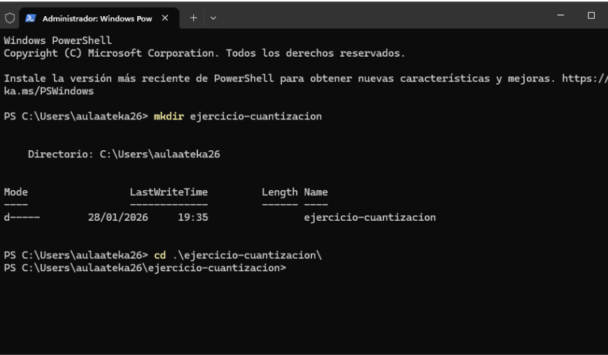
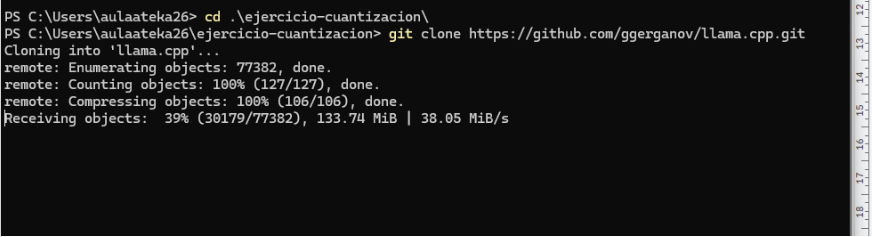
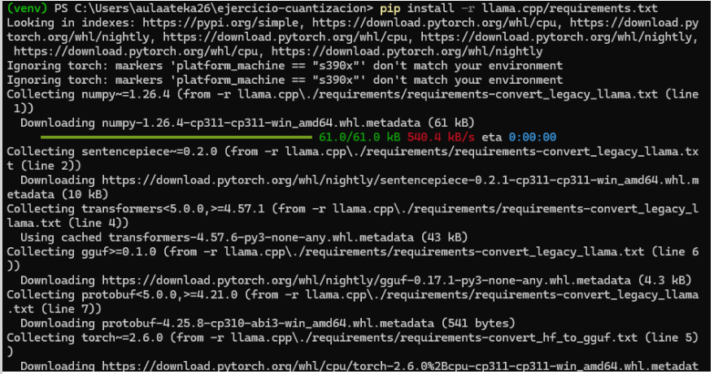
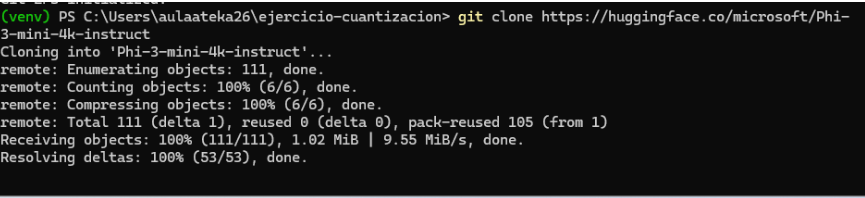
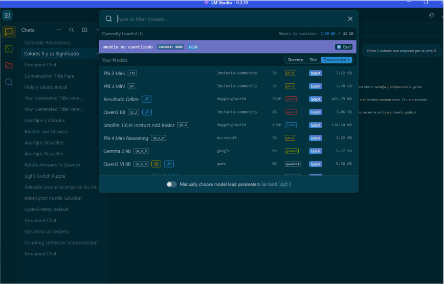
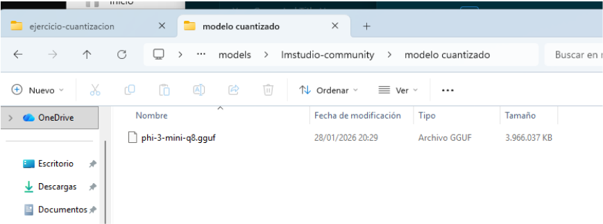
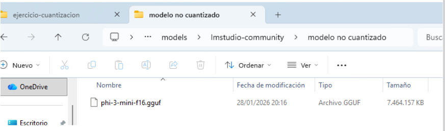
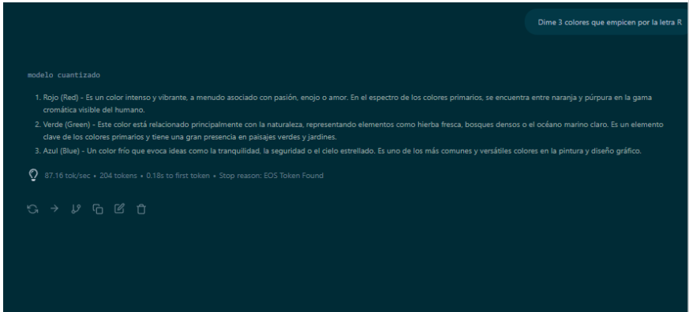
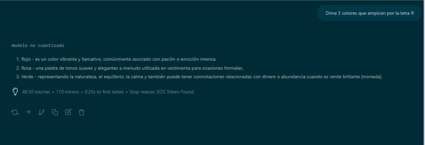

Objetivo del procedimiento
El objetivo es convertir el modelo Phi-3-mini-4k-instruct de Microsoft, en formato de alta precisión (FP16), a un archivo GGUF cuantizado a 4 bits utilizando el tipo Q4_K_M.
Con esta conversión se obtiene un modelo más ligero y rápido, adecuado para ejecutarlo de forma local con herramientas como llama.cpp o clientes gráficos compatibles.
¿Qué es la cuantización y qué es GGUF?
La cuantización reduce el número de bits con los que se representan los pesos del modelo, pasando por ejemplo de 16 bits a 4 bits, disminuyendo el tamaño del archivo y el consumo de memoria.
GGUF es un formato binario diseñado para ejecutar modelos cuantizados de forma eficiente con llama.cpp y otras herramientas compatibles, soportando variantes como Q4_K_M.
La configuración Q4_K_M es una cuantización de 4 bits que busca un equilibrio entre calidad de generación, tamaño del modelo y velocidad de inferencia.
Herramientas necesarias
- Python 3 instalado en el sistema.
- Git y git-lfs para clonar repositorios grandes desde Hugging Face.
- Acceso a Internet para descargar
llama.cppy el modelo de Microsoft. - Espacio en disco suficiente (varios GB) para el modelo original y el cuantizado.
Preparar el entorno de trabajo
1.1 Crear carpeta del proyecto
mkdir ejercicio-cuantizacion
cd ejercicio-cuantizacion
ejercicio-cuantizacion y el acceso a la misma.
1.2 Clonar el repositorio de llama.cpp
git clone https://github.com/ggerganov/llama.cpp.git
llama.cpp en la terminal.
1.3 Crear y activar entorno virtual
python -m venv venv
# En Linux o macOS
source venv/bin/activate
# En Windows
venv\Scripts\activate
Es recomendable usar un entorno virtual para aislar las dependencias de Python de otros proyectos del sistema.
1.4 Instalar dependencias de llama.cpp
pip install -r llama.cpp/requirements.txt
pip.
Descargar el modelo original de Hugging Face
Una vez configurado el entorno, se descarga el modelo original en FP16 desde Hugging Face utilizando Git y git-lfs.
git lfs install
git clone https://huggingface.co/microsoft/Phi-3-mini-4k-instruct

Al finalizar, se crea una carpeta llamada Phi-3-mini-4k-instruct que contiene los archivos del modelo en alta precisión.
Conversión y cuantización a GGUF (Q4_K_M)
El script convert-hf-to-gguf.py de llama.cpp realiza la conversión del modelo de Hugging Face al formato GGUF cuantizado.
python llama.cpp/convert-hf-to-gguf.py ./Phi-3-mini-4k-instruct/ \
--outtype q4_k_m \
--outfile phi-3-mini-q4.gguf
./Phi-3-mini-4k-instruct/: ruta al modelo original FP16.--outtype q4_k_m: indica cuantización en 4 bits tipo Q4_K_M.--outfile phi-3-mini-q4.gguf: nombre del archivo GGUF resultante.
phi-3-mini-q4.gguf dentro de la carpeta del proyecto.
Carga del modelo cuantizado en un cliente (LM Studio)
El modelo cuantizado puede cargarse en un cliente como LM Studio, seleccionando el archivo phi-3-mini-q4.gguf como modelo base para las pruebas.

phi-3-mini-q8.gguf o phi-3-mini-f16.gguf.
Comparativa: modelo cuantizado vs no cuantizado
Para comparar el rendimiento, se ha hecho la misma pregunta (“Dime 3 colores que empiecen por la letra R”) a ambas versiones del modelo, registrando velocidad y calidad de respuesta.
| Modelo | Velocidad (tok/sec) | Tokens generados | Tiempo hasta 1er token |
|---|---|---|---|
| Cuantizado (Q4_K_M) | 87.16 tok/sec | 204 tokens | 0.18 s |
| No cuantizado (FP16) | 49.30 tok/sec | 110 tokens | 0.25 s |


En este ejemplo el modelo cuantizado es notablemente más rápido, manteniendo una calidad de respuesta similar y totalmente válida para el uso general.
Conclusiones
- La cuantización a 4 bits en formato Q4_K_M reduce el tamaño del modelo y acelera la generación de texto.
- El flujo general es: preparar entorno, descargar el modelo FP16 y ejecutar el script de conversión a GGUF.
- El ligero impacto en precisión suele ser aceptable frente a la mejora en rendimiento y requisitos de hardware.